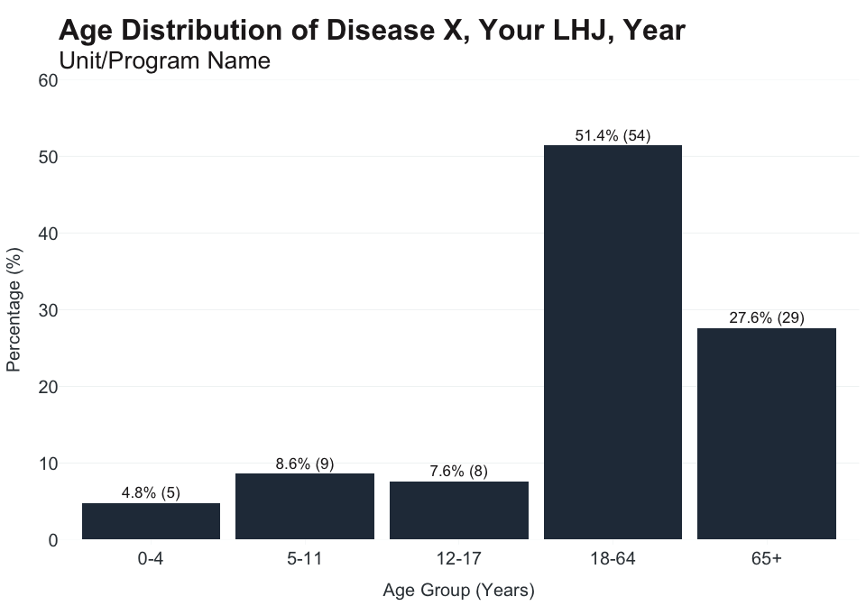

{OCepi} aims to provide a standardized approach to the mundane data wrangling tasks for public health epidemiologists. The functions included in this package can be broadly applied but were made specifically for epidemiologists at county and State agencies. This package addresses the following priorities:
- standardization of recoding demographic data, specifically: ethnicity/race, gender, sexual orientation, and age groups
- elevated branding for ggplots with tidy labels and aesthetics
- simple methods to suppress/redact information prior to public reporting
- methods to group cases/episode into MMWR disease weeks and years
For full documentation, see vignettes/OCepi.
Installation
For the latest development version:
# install.packages("devtools")
devtools::install_github("ericmshearer/OCepi")Example Use Cases
Recoding + Plot
Here we have simulated outbreak data that needs cleaning prior to reporting/summarizing:
#> # A tibble: 6 × 6
#> Ethnicity Race Gender Age `Sexual Orientation` `Specimen Date`
#> <chr> <chr> <chr> <dbl> <chr> <chr>
#> 1 Non-Hispanic or Latino Mult… M 46 HET 6/7/2022
#> 2 Unknown Unkn… M 4 HET 6/9/2022
#> 3 Non-Hispanic or Latino White F 52 UNK 6/7/2022
#> 4 Non-Hispanic or Latino White F 77 UNK 6/11/2022
#> 5 Unknown Amer… M 71 HET 6/10/2022
#> 6 Non-Hispanic or Latino Other M 70 HET 6/9/2022Applying the core functions:
linelist <- linelist %>%
mutate(
Gender = recode_gender(Gender),
race_ethnicity = recode_race(Ethnicity, Race, abbr_names = FALSE),
age_group = age_groups(Age, type = "school"),
`Sexual Orientation` = recode_orientation(`Sexual Orientation`)
)#> # A tibble: 3 × 2
#> Gender n
#> <chr> <int>
#> 1 Female 51
#> 2 Male 39
#> 3 Missing/Unknown 15
#> # A tibble: 9 × 2
#> race_ethnicity n
#> <chr> <int>
#> 1 American Indian/Alaska Native 10
#> 2 Asian 7
#> 3 Black/African American 16
#> 4 Hispanic/Latinx 19
#> 5 Multiple Races 6
#> 6 Native Hawaiian/Other Pacific Islander 10
#> 7 Other 15
#> 8 Unknown 8
#> 9 White 14
#> # A tibble: 5 × 2
#> age_group n
#> <fct> <int>
#> 1 0-4 5
#> 2 5-11 9
#> 3 12-17 8
#> 4 18-64 54
#> 5 65+ 29
#> # A tibble: 4 × 2
#> `Sexual Orientation` n
#> <chr> <int>
#> 1 Bisexual 1
#> 2 Gay, lesbian, or same gender-loving 3
#> 3 Heterosexual or straight 89
#> 4 Missing/Unknown 12Next we’ll make a nice plot for a slide deck/report. Functions add_percent will be used to create a percentage variable, and n_percent for making plot labels. We can control the order of n and percent in the label by using argument reverse.
linelist %>%
count(age_group) %>%
mutate(
percent = add_percent(n, digits = 1),
label = n_percent(n, percent, reverse = TRUE)
) %>%
ggplot(aes(x = age_group, y = percent, label = label)) +
geom_col(fill = "#283747") +
scale_y_continuous(expand = c(0,0), limits = c(0,60)) +
theme_apollo(direction = "vertical") +
labs(
title = "Age Distribution of Disease X, Your LHJ, Year",
subtitle = "Unit/Program Name",
x = "Age Group (Years)",
y = "Percentage (%)"
) +
apollo_label(direction = "vertical")
Contact
Simplest ways to contact me:
- Questions/Feedback: ericshearer@me.com
- Issues/Bugs: https://github.com/ericmshearer/OCepi/issues